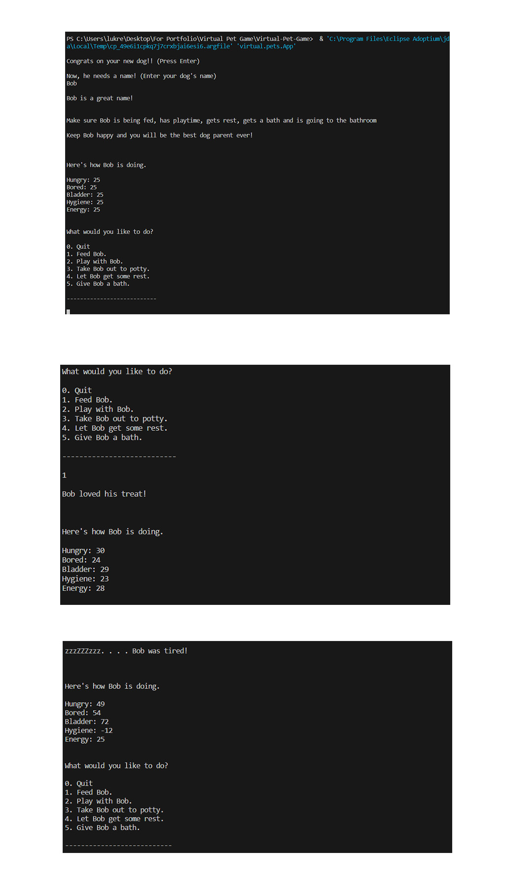

VIRTUAL PET GAME
The Virtual Pet Game was another project I did in my WCCI class. To play this game, you just need to take care of your pet, virtually. The game uses a point system (pet health) and has a tick system. You can gain points and you can loses point. If it gets to "0" Your pet is dies. This project helped me learn how to use Java to create tick methods, loops, user inputs and write outputs to the console.
